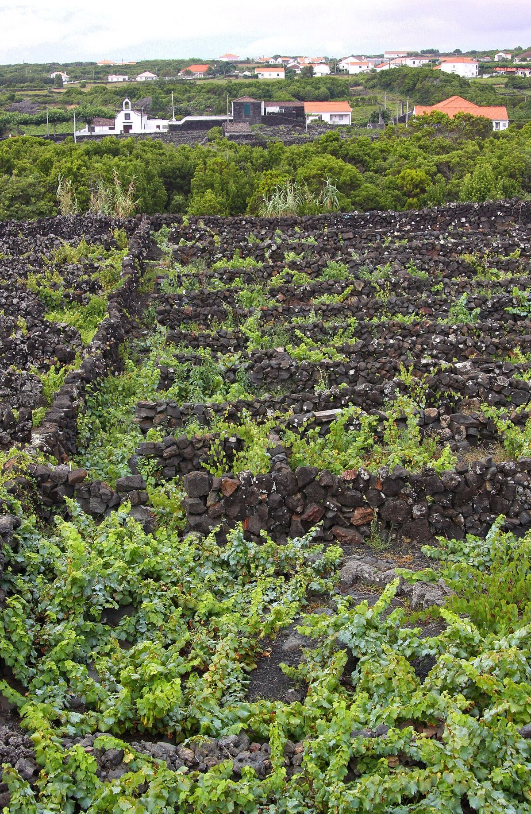

Portugal
Portugal combines a very old winegrowing tradition with an exceptional heritage of native grape varieties. It is famous for its fortified wines, Port and Madeira, and increasingly for its reds from the Douro, Dão and Alentejo and the fresh whites of Vinho Verde.

History
Vines have been grown in what is now Portugal since antiquity, and it was the Romans who spread their cultivation and the wine trade in an organised way across the province of Lusitania. After the kingdom took shape in the twelfth century, religious orders helped to maintain and extend the vineyards. Regular trade with England existed from the Middle Ages and intensified in the seventeenth century, when wars between England and France led English merchants to look for Portuguese wines. The Methuen Treaty, signed in 1703, gave these wines favourable tariff treatment in the English market and strengthened the presence of British houses in Porto and on Madeira.
In 1756 the Marquis of Pombal created the Companhia Geral da Agricultura das Vinhas do Alto Douro and ordered the demarcation of the Douro region, which counts among the first wine areas in the world to have their boundaries and rules laid down by law. The nineteenth century brought powdery mildew and phylloxera, which devastated much of the vineyard and forced replanting on American rootstocks. In the early twentieth century other regions were demarcated, such as Vinho Verde and Dão. For much of that century the sector was dominated by cooperatives and large merchants, and Portugal also became known for branded rosés aimed at export markets. Joining the European Economic Community in 1986 drove a far-reaching modernisation: many quintas began bottling their own wine, vineyards were restructured and native grape varieties were given new value.
Climate and soils
Despite its modest size, Portugal shows great climatic diversity. The north-west, open to the Atlantic, is cool and very rainy. Further inland, the Marão, Montemuro and Serra da Estrela ranges hold back the ocean’s influence, so that valleys such as the Douro have very hot, dry summers and cold winters. The south, with the broad plain of the Alentejo, is warm and dry, with a Mediterranean character, while the central coastal strip benefits from the moderating effect of the ocean. The Madeira and Azores archipelagos have Atlantic island climates.
The soils are just as varied: granite in the north and in the Dão; schist in the Douro and parts of the Alentejo; clay and limestone in Bairrada and Lisboa; sand on the Setúbal peninsula and at Colares; and volcanic basalt soils on the islands.
Grape varieties
One of the country’s most distinctive features is its vast heritage of native grape varieties, with hundreds of registered castas, many of them scarcely grown outside Portugal. Among the reds, the most important are Touriga Nacional, regarded as the country’s flagship grape; Touriga Franca, widely planted in the Douro; Tinta Roriz or Aragonez, local names for Tempranillo; Baga from Bairrada; Castelão from the south; and Trincadeira, Alfrocheiro and Jaen, which is Mencía. Alicante Bouschet, of French origin, has adapted very well to the Alentejo. Leading whites include Alvarinho (Albariño) and Loureiro in the Minho, Arinto, found almost everywhere in the country, Encruzado from the Dão, Antão Vaz from the Alentejo and the traditional Madeira grapes: Sercial, Verdelho, Boal and Malvasia. In many old vineyards the varieties were planted together, and these «vinhas velhas» still yield highly prized field blends.
Styles
Portugal is best known for its fortified wines. Port, made from Douro grapes whose fermentation is stopped with grape spirit, comes in ruby and tawny styles, from young wines to Vintage Ports and age-dated tawnies. Madeira owes its character to oxidative ageing with heat, and Moscatel de Setúbal is a sweet fortified wine with long skin maceration. Alongside them, still wines have grown in importance: structured reds from the Douro, elegant reds and whites from the Dão, Baga reds and sparkling wines from Bairrada, ripe, generous wines from the Alentejo, where fermentation in clay amphorae (talhas) survives, and light, fresh whites from Vinho Verde.
Regulations and classifications
The Portuguese system has three tiers. The DOP, which includes the traditional Denominações de Origem Controlada (DOC), covers wines from demarcated areas with rules on varieties, yields and winemaking. The IGP, known as Vinho Regional, covers broader territories with more flexible rules. Finally, the generic Vinho category carries no geographical origin. The Instituto da Vinha e do Vinho coordinates the whole system, while regional wine commissions and specific bodies, such as the Instituto dos Vinhos do Douro e do Porto and its Madeira counterpart, oversee their respective appellations. Labels may carry terms such as Reserva, Grande Reserva or Garrafeira, the last associated with a minimum ageing period that includes time in bottle.
Regions & appellations
Douro
Controlled Designation of Origin (DOC) · The Douro valley, in northern Portugal, is the birthplace of Port and one of the oldest demarcated wine regions in the world. Under the Douro DOC it also produces still reds and whites of growing prestige.
Port
Controlled Designation of Origin (DOC) · The Porto DOC covers the fortified wine made from Douro valley grapes, whose fermentation is stopped with grape spirit. It is traditionally aged in the lodges of Vila Nova de Gaia, across the river from the city of Porto.
Vinho Verde
Controlled Designation of Origin (DOC) · The Vinho Verde region occupies the green, rainy north-west of Portugal, in the Minho. It is known for its light, fresh, aromatic whites and for the Alvarinhos of Monção e Melgaço.
Dão
Controlled Designation of Origin (DOC) · The Dão is a granite plateau in north-central Portugal, ringed by mountains, producing fresh, elegant Touriga Nacional reds and Encruzado whites with ageing potential.
Alentejo
Controlled Designation of Origin (DOC) and Alentejano GI · The Alentejo, the great warm plain of southern Portugal, produces mainly ripe, fruity reds and broad whites, and keeps alive the ancient tradition of fermenting wine in clay amphorae.
Bairrada
Controlled Designation of Origin (DOC) · Bairrada, between Aveiro and Coimbra, is the home of the Baga grape, which gives tannic, long-lived reds, and one of Portugal’s main sparkling wine areas.
Madeira
Protected Designation of Origin (PDO) · The Atlantic island of Madeira produces a unique fortified wine, aged oxidatively with heat, ranging from dry to sweet and famous for its vibrant acidity and extraordinary longevity.
Lisboa
Geographical Indication (Vinho Regional) and several DOCs · The Lisboa region, formerly known as Estremadura, stretches north of the capital along the Atlantic coast. It combines a large output of regional wines with small historic appellations such as Colares, Bucelas and Carcavelos.
Setúbal
Setúbal DOC, Palmela DOC and Península de Setúbal GI · The Setúbal peninsula, south of Lisbon, is the home of Moscatel de Setúbal, a sweet fortified wine with long skin maceration, and also produces Castelão reds under the Palmela DOC.